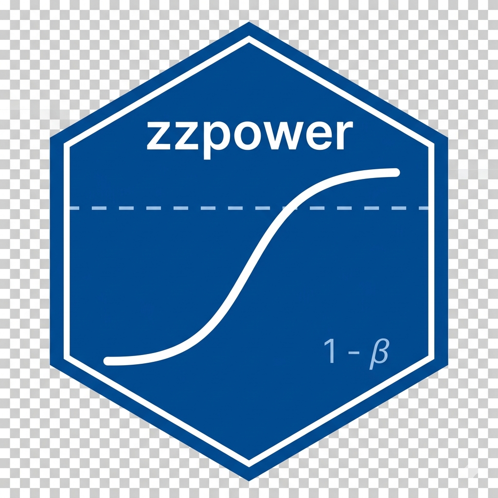

Quickstart Guide: zzpower
Ronald (Ryy) G. Thomas
2026-05-01
Source:vignettes/quickstart.Rmd
quickstart.RmdOverview
zzpower is an interactive Shiny application for power analysis and sample size calculations in clinical trials. The package supports multiple statistical tests through a scalable plugin architecture.
Basic Usage
Launch the interactive application:
The application opens in your web browser with a tabbed interface for different statistical tests.
Supported Statistical Tests
Two-Group t-test (Independent Samples)
For parallel-group clinical trial designs:
- Effect size methods: Cohen’s d, percent reduction, difference in scores
- Design features: dropout rates, unequal allocation ratios
- Output: power curves, sample size tables, downloadable reports
Paired t-test
For before-after or crossover designs:
- Effect size: Standardized mean difference
- Sample size calculation for matched pairs
One-Sample t-test
For comparison against a fixed reference value:
- Effect size: Cohen’s d
- Single-group sample size determination
Workflow Example
4. Specify Effect Size
Choose an effect size method and set the range to evaluate:
- Cohen’s d: Direct standardized effect (0.2 = small, 0.5 = medium, 0.8 = large)
- Percent Reduction: Effect as percentage reduction from control
- Difference in Scores: Absolute difference in outcome units
5. Configure Design
Adjust advanced settings:
- Dropout/drop-in rates
- Allocation ratio (1:1, 2:1, etc.)
- Alpha level (0.05, 0.01, etc.)
- One-sided vs two-sided testing
Function Reference
| Function | Purpose |
|---|---|
launch_zzpower() |
Launch interactive Shiny app |
Key Parameters for launch_zzpower()
| Parameter | Description | Default |
|---|---|---|
port |
Port number | NULL (random) |
host |
IP address | “127.0.0.1” |
launch.browser |
Open browser | TRUE |
Architecture
zzpower uses a scalable plugin/registry architecture:
- Registry: Central specification of all test definitions
- Generic UI Builder: Dynamic UI generation from specifications
- Generic Server Factory: Dynamic server logic from specifications
This architecture enables support for 20+ statistical tests with minimal code duplication.